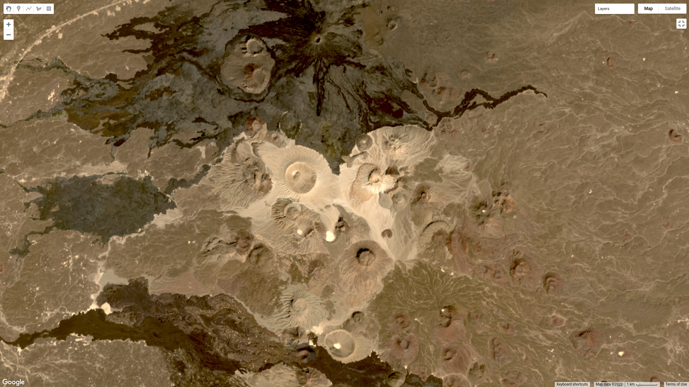

unsupervised classification¶
For this tutorial, we’re going to use a 15 February 2022 Landsat 9 image covering Harrat Khaybar, a volcanic field in Saudi Arabia:
{kind=link}
Unsupervised classification is a classification technique where we have little to no input to the classification routine. Instead,
the classification algorithm determines how to group, or “cluster,” pixels, based on their properties.
It’s important to note that the classes output by an unsupervised classification have no meaning, in the sense that they’re only groups of pixels based on the image data. After running an unsupervised classification, then, the next task is to interpret and identify what each of these classes represent.
In this tutorial, you will learn:
how to select a random sample from an Image
how to train and apply a Clusterer to an Image
how to select a stratified sample of pixels from an Image
how to plot the spectral characteristics of classes to see their differences
selecting sample points¶
The Image that we’re using is 7601 * 7331 pixels = 55.7M pixels/band * 7 bands = 390M pixels - that’s a lot. To help improve
performance of the clustering algorithm, and prevent Out of Memory errors when we run the script, we want to take a
random sample of pixels.
To do this, we can use ee.Image.sample() (documentation):
var training = img.select('SR_B.').sample({
region: img.geometry(),
scale: 30,
numPixels: 5000
});
ee.Image.sample takes a number of arguments - here, we’re specifying the region (img.geometry()),
the scale of the Image in meters, and numPixels, the number of pixels to sample.
training a clusterer¶
Next, we use these sample points to train a Clusterer using ee.Clusterer.wekaKMeans()
(documentation). This will train
the unsupervised classifier (also called a Clusterer, because it uses the properties of the pixels to group, or cluster,
them together) using WEKA k-means12:
var clusterer = ee.Clusterer.wekaKMeans({nClusters: 16}).train(training);
ee.Cluster.wekaKMeans() takes a number of arguments; here, we’re only using one:
nClusters, the number of clusters to divide the sample into.
In general, the number of clusters will depend on the particular scene - you may want to experiment with choosing
different numbers of clusters to see the effects on the end results. You can also use a different method,
such as ee.Clusterer.wekaXMeans() (documentation)
or ee.Clusterer.wekaCascadeKMeans() (documentation),
which are designed to optimize the number of clusters based on the input data.
applying the classification¶
Once we’ve trained the Clusterer, we can then apply it to the Image using ee.Image.cluster()
(documentation):
var unsupervised = img.cluster(clusterer);
This will assign a cluster, or class, value to each pixel based on its spectral properties.
viewing the clusters¶
To view the clusters on the Map, we can use ee.Image.randomVisualizer()
(documentation <https://developers.google.com/earth-engine/apidocs/ee-image-randomvisualizer>__)
to provide a random palette to display the image (like we did for the zonal statistics tutorial):
Map.addLayer(unsupervised.randomVisualizer(), {}, 'clusters');
This should produce the following artistic image in the Map:
{kind=link}
Remember that the class values in the image (0–15) don’t yet correspond to any physical meaning - in order to finish the
classification, we would need identify what physical surfaces or objects the class values represent.
stratified sampling¶
To view the spectral properties of the clusters, we can create a scatter plot that plots the reflectance in one band versus the reflectance in a different band, colored by cluster.
First, we add the clustered Image to our original Image:
reflimg = reflimg.addBands(unsupervised.select('cluster'));
This way, we can select pixels from that Image based on what cluster they belong to.
Because of the number of pixels in the Image (remember: 7601 * 7331 pixels = 55.7M pixels),
we can’t just plot all of the pixel values at once. Instead, we again take a random sample of pixels,
this time using ee.Image.stratifiedSample() (documentation):
var sample = reflimg.select(['cluster', 'SR_B.']).stratifiedSample({
numPoints: 300,
classBand: 'cluster',
region: reflimg.geometry(),
scale: 30,
projection: reflimg.projection()
});
This selects a random sample of (up to) 300 pixels from each cluster. ee.Image.stratifiedSample() takes a number of arguments; here,
we’re using the following:
numPoints- the number of points for eachclassinclassBandclassBand- the Image band that identifies theclassof each pixelregion- the Geometry over which to select the samplesscale- the nominal scale of the Image to use, in metersprojection- the projection of the Image to use
Note
The output of ee.Image.stratifiedSample() is a FeatureCollection. Because we are limited to 5000 elements for the Chart,
just like we are for using print(), we are limited to 5000 elements / 16 classes ~= 300 elements / class. To show more
elements per class, we would need to reduce the number of classes.
creating a scatter plot¶
To create the scatter plot, we’ll use ui.Chart.feature.groups()
(documentation).
Because we’re limited to plotting two bands at a time, we’ll create a function that enables us to easily make multiple plots - instead of copying + pasting the code for the Chart multiple times and changing the parameters, we only need to call the function multiple times. If we want to change something about our Chart, we only have to change it one place – functions are a way to clean up our script and easily re-use repeated code.
function compChart(feat, band1, band2){
var chart = ui.Chart.feature.groups({
features: feat,
xProperty: band1,
yProperty: band2,
seriesProperty: 'cluster'
}).setOptions({
title: band1 + ' ' + band2 + ' comparison',
hAxis: {
title: band1,
titleTextStyle: {italic: false, bold: true},
viewWindow: {min: 0, max: 1}
},
vAxis: {
title: band2,
titleTextStyle: {italic: false, bold: true},
viewWindow: {min: 0, max: 1}
},
lineWidth: 0,
pointSize: 4
});
return chart;
}
This function, compChart(), takes three arguments:
feat- the FeatureCollection to select values from;band1- the name of the band to plot on the x-axis;band2- the name of the band to plot on the y-axis;
and returns a Chart object that plots the values for each cluster in a single color.
To see the Chart, remember that we have to print it to the Console:
var chart1 = compChart(sample, 'SR_B5', 'SR_B7');
print(chart1);

The plot above shows the SWIR2 (SR_B7) values vs. NIR (SR_B5) values for each cluster. Note that there is some
overlap between the clusters, because the clustering has been done in seven dimensions, rather than just two.
plotting spectral signatures¶
The final plot we’ll have a look at will plot the median values in each band for each cluster; in effect, it shows us the spectral signature of each cluster.
To get the median of each cluster, we use ee.FeatureCollection.reduceColumns()
(documentation).
var reduced = sample.reduceColumns({
selectors: ['cluster', 'SR_B1', 'SR_B2', 'SR_B3', 'SR_B4', 'SR_B5', 'SR_B6', 'SR_B7'],
reducer: ee.Reducer.median().repeat(7).group({
groupField: 0,
groupName: 'cluster',
})
});
ee.FeatureCollection.reduceColumns() will apply the chosen Reducer to each of the
columns named in selectors - here, we’ve selected each of the bands in the Image.
The Reducer that we’re using is ee.Reducer.median(), but note that we’re also using
ee.Reducer.repeat() (documentation) – this is
so that the Reducer calculates the median value for each band in selectors – without this, we would only get a value
for the first input.
We’re also using ee.Reducer.group() (documentation),
which will calculate the median of each of the values in groupField. Note that
the groupField corresponds to the index in the inputs to the Reducer –
because ‘cluster’ is the first value in the selectors List, the
groupField here is 0; setting groupName to ‘cluster’ will just re-name the key in the output Dictionary.
The output of ee.FeatureCollection.reduceColumns() is a Dictionary with a single key, groups. We can
use the output of ee.Dictionary.get() (documentation),
along with ee.List.map(), to get each cluster name as a String:
var categories = ee.List(reduced.get('groups')).map(function(obj){
return ee.String(ee.Dictionary(obj).get('cluster'));
});
as well as the median value in each band in the Image for each cluster:
// get the mean reflectance values from all of the classes
var reflectances = ee.List(reduced.get('groups')).map(function(obj){
return ee.List(ee.Dictionary(obj).get('median'));
});
Note that reflectances is a List of List objects; that is, an Array. Just like with the
spectral signatures tutorial, we can then use ui.Chart.array.values()
(documentation) to plot each
“row” of the Array as a line:
var spectralChart = ui.Chart.array.values({
array: reflectances,
axis: 1,
xLabels: wavelengths
})
.setSeriesNames(categories) // change the names of each line
.setOptions({
title: 'spectral signatures',
hAxis: {
title: 'wavelength (µm)',
titleTextStyle: {italic: false, bold: true},
viewWindow: {min: 0.4, max: 2.3}
},
vAxis: {
title: 'surface reflectance',
titleTextStyle: {italic: false, bold: true},
viewWindow: {min: 0, max: 1}
},
lineWidth: 4
});
The result of this is another Chart object that we can print to the Console:

Here, we can see that there’s probably a good deal of overlap between different clusters in each band - possibly indicating
that we could reduce the number of clusters,
Note that unlike in the spectral signatures tutorial, we’re setting the lineWidth
property of each line together, rather than specifying the properties of each line individually. To set the properties of
each line (series) individually, you can supply a Dictionary of options corresponding to each series:
series: {
0: {lineWidth: 4, color: 'e1fff9'},
1: {lineWidth: 4, color: 'd6bc87'},
2: {lineWidth: 4, color: '228b22'}, // ... and so on.
}
next steps¶
At this point, you’ve seen how to select a random sample from an Image, and train and apply a Clusterer to that Image. You’ve also seen a few examples of how to plot the spectral values of the clusters, to aid in investigating what physical surface(s) each cluster belongs to.
If you’re interested in some additional practice, here are some suggestions:
How does increasing (or decreasing) the number of sample points used to train the Clusterer affect the results?
How does increasing (or decreasing) the number of clusters affect the outcome of using
ee.Clusterer.wekaKMeans()?Instead of specifying the number of clusters, try using
ee.Clusterer.wekaXMeans()oree.Clusterer.wekaCascadeKMeans()to choose an optimal number of classes for the image.Another option for changing, or improving, the performance of the Clusterer is by providing a random seed3 – does this have any impact on the results you see?
references and notes¶
- 1
Frank, E., M. A. Hall., and I. H. Witten (2016). The WEKA Workbench. Online Appendix for “Data Mining: Practical Machine Learning Tools and Techniques”, Morgan Kaufmann, Fourth Edition, 2016. [pdf]
- 2
For a (brief) overview of k-means clustering, the wikipedia page is a good place to start: https://en.wikipedia.org/wiki/K-means_clustering
- 3
Arthur, D. and S. Vassilvitskii (2007). in: Proceedings of the Eighteenth Annual ACM-SIAM Symposium on Discrete Algorithms, SODA ’07. pp. 1027–1035. doi: 10.5555/1283383.1283494 <https://doi.org/10.5555/1283383.1283494>__